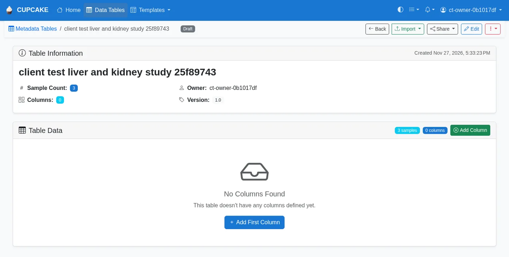
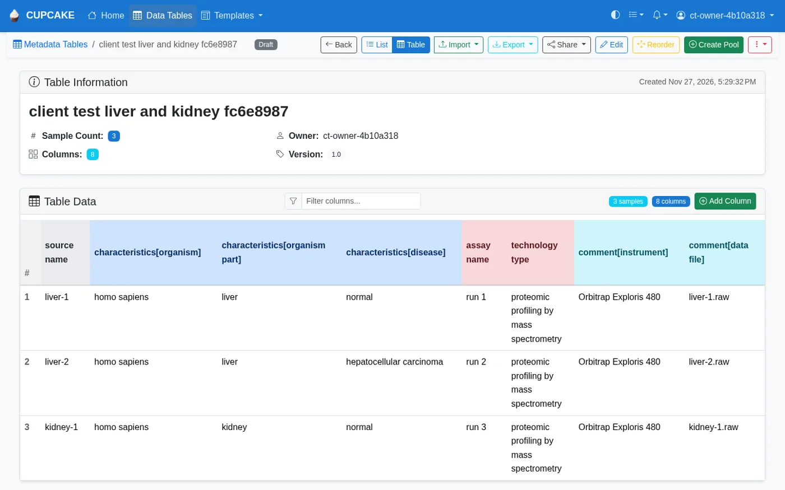

Opening a table shows its information (sample count, columns, owner, lab group, version, and whether it is locked or published) and its contents, as a List of columns or as a Table of samples by columns.


Columns
Add Column adds a column from a column template; columns follow the order of the table's SDRF schemas, and Reorder restores that order. Drag a column to move it. Each column is marked when it is required, read-only, hidden or filled automatically.
A column's actions:
- Edit default value: the value of every sample that has no value of its own.
- Auto-fill values: fill samples from a template such as
sample {n}or a numeric range (Basic), or generate combinations of several columns' values for many samples (Advanced). - Edit column settings: its template, type, ontology, and whether it is mandatory, hidden, read-only or staff only.
- View column history: every change, with its old and new values.
Filter columns shows only the columns whose names match.
Values
Click a cell to edit its value. The editor suggests terms from the column's ontology as you type, offers your favourite values and those of your lab group, and has quick choices such as Not Applicable and Not Available. Columns such as modifications, cleavage agents, ages, spiked compounds and m/z ranges have a structured editor that writes the SDRF value for you; turn it off to type the value directly. Apply to Samples writes the value to several samples at once, and Add to Favorites keeps it for later; see Favourites.
Search and Replace replaces every cell holding exactly one value, in one column or all of them, and optionally in the sample pools. It cannot be undone.
Sample pools
Create Pool groups samples into a pool: choose the samples, or a range, and whether each is only pooled or also run on its own. A reference pool is marked as such. Pools are exported with the table.
The table itself
Edit changes the table's name, description, sample count, version and lab group. Delete Table removes it.